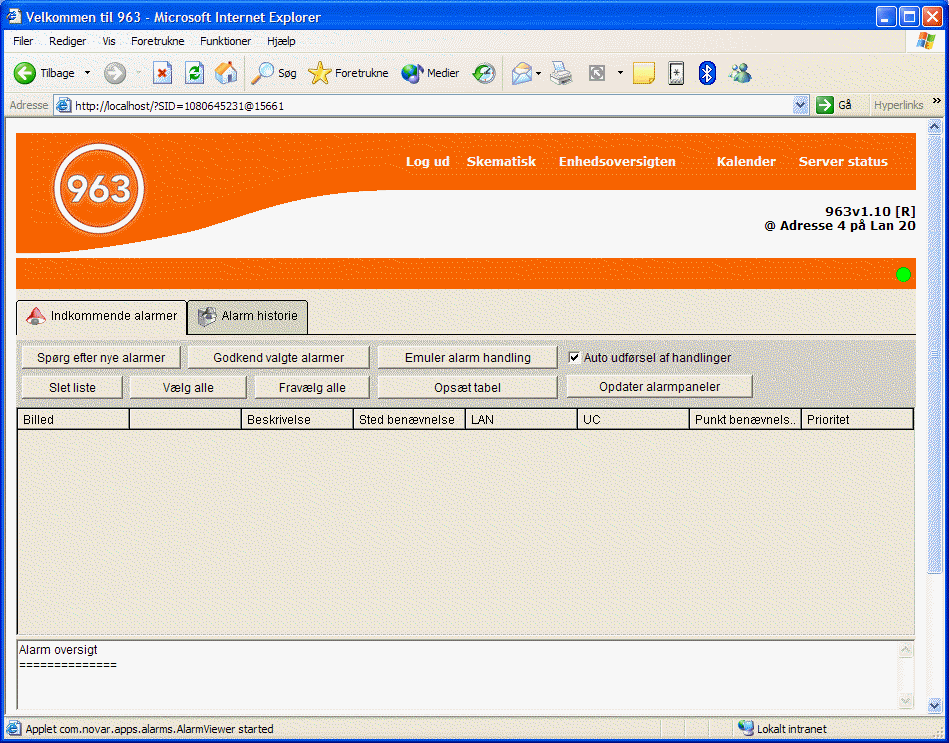

Ved at logge på fremkommer 963’s start-side. Denne kan dog blive gemt, hvis man ser på skematiske sider eller Enhedsoversigten.
Sådan vises 963’s start-side:
1 Hold tasten ‘Alt’ nede, og tryk på tasten ‘Tab’, indtil start-siden fremkommer.
2 Slip begge taster. 963’s start-side fremkommer som vist nedenfor.
